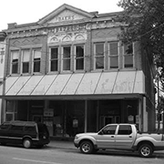
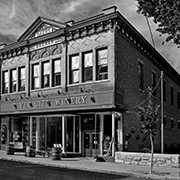
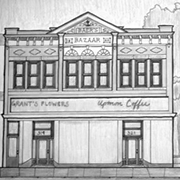

Our History
River City Winery LLC is housed in the historic Baer Building, which was built in 1900 for Baer Dry Goods. The structure has been home to various stores and offices through the years, but it was vacant and in disrepair when Losson Block LLC bought it in 2008.
River City Winery, the little winery in the heart of historic New Albany, is a dream come true for Melissa Humphrey and her mother, Rosie Bryant. The winery has brought them the opportunity to pursue activities that they have long enjoyed.
Although the winery is the owners’ first entrepreneurial effort, the mother-daughter partners are no strangers to the winemaking process. Bryant said the art of wine making was passed down from her grandfather, Ed Lynch, to her father, Jim Lynch. She made her first batch of wine about seven years ago as a gift for her father and was “hooked.
There is an event room on the second floor that River City Winery will manage on behalf of Losson Block. The space will seat about 60 people and can be used for business functions, rehearsal dinners, wedding and baby showers and holiday parties. They are planning to build a outside patio bar within the next year.
It is their hope that you will come and visit them at River City Winery, enjoy some superb wine, fabulous food, relaxing ambience and just uncork and un-wine!
- 
- 
- 